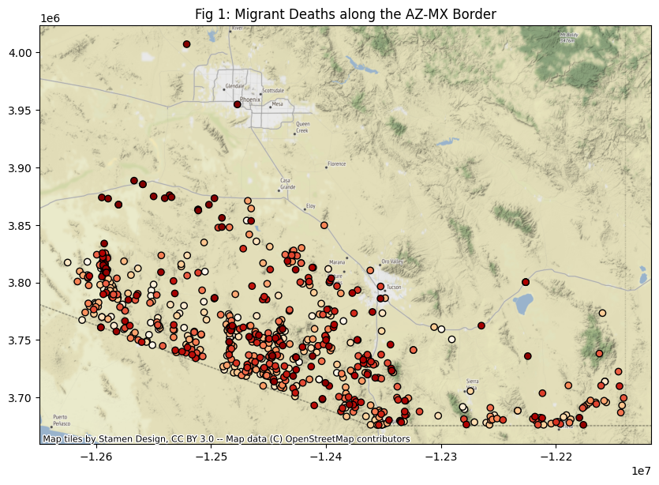
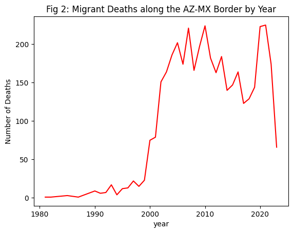
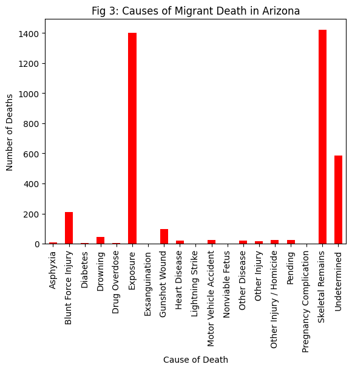
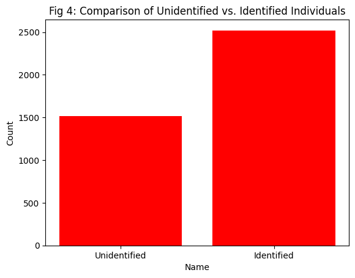

#read data
import pandas as pd
migrantdeath_data = pd.read_csv('https://humaneborders.info/app/getTableByMultipleSearch.asp?sex=&cod=&county=&corridors=&sm=&years=&name=&detail=full&format=csv')Migrant Deaths along the Arizona-Mexico Border
Miranda Solorio 08/07/2023
Content Warning: The topic of this data and analysis looks at deaths of migrants crossing the border through the U.S-MX border in Arizona
Introduction
My Final Project is exploring migrant deaths along the Arizona-Mexico border. My interest began in this subject after reading “The Land of Open Graves” from Jason De Leon (2015). The book looks at the affect of U.S. immigration policy on the crossing experiences of migrants from Latin America. He explores primarily the bordering cities of Nogales, Mexico and Nogales, United States of America and what he witnesses during his ethnographical and archaeological work in the area. My primary interest comes from his discussion about how U.S policy, particularly Prevention through Deterrence, has unecessarily taken migrant lives by introducing policy that promised to deter migration by militarizing the main points of entry and making migration harder. These policies did not deter migration, it instead directed migration flow towards the more dangerous and desolate areas of America like the deserts of Arizona that the border patrol couldn’t heavily survey. Since it’s introduction, more and more migrants have had to cross through the unforgiving desert environment and deaths within these areas have only increased. While De Leon only documents these horrible stories along the border through photo and narrative, there are data sets that actually quantify the affects of these policies. The dataset I use for this project documents the quantity of migrant deaths within Arizona. By visualizing this data set I hope to show the relationship between policy changes and migrant deaths in order to bring attention to the humanitarian crisis occuring at our borders.
Methods
During the time for which I was reading the book from De Leon, I came across a website that visualized the deaths along the border by placing them on a map based on filters you inputted. The website claims to “provide geographic information systems-based tools that use publicly available information to grant access to high quality downloadable spatial data regarding migrant death.” all in the name of assisting families of missing migrants in finding closure (Arizona OpenGIS Initiative for Deceased Migrants 2023). I’ll be using the download link to access the data and create my own visualizations.
#remove columns that wont be useful: surface management, corridor code, and corridor.
column_to_remove = 'Surface Management'
migrantdeath_data = migrantdeath_data.drop(columns=[column_to_remove])column_to_remove = 'Corridor Code'
migrantdeath_data = migrantdeath_data.drop(columns=[column_to_remove])
column_to_remove = 'Corridor'
migrantdeath_data = migrantdeath_data.drop(columns=[column_to_remove])
column_to_remove = 'UTM X'
migrantdeath_data = migrantdeath_data.drop(columns=[column_to_remove])
column_to_remove = 'UTM Y'
migrantdeath_data = migrantdeath_data.drop(columns=[column_to_remove])#I want to convert 'Reporting Date' into a date-time variable where only year is read
import numpy as np
migrantdeath_data['year'] = pd.DatetimeIndex(migrantdeath_data['Reporting Date']).yearResults
For reiteration, my research topic seeks to explore the correlation of U.S. policy to migrant deaths along the border and highlight the effects of the desert on migrants.
import folium
import geopandas as gpd
import contextily as ctx
from shapely.geometry import Point
import matplotlib.pyplot as plt
df = migrantdeath_data[(migrantdeath_data['year'] >= 2020) & (migrantdeath_data['year'] <= 2023)] #limit date range for visibility
#plot on map
geometry = [Point(loc) for loc in zip(df.Longitude, df.Latitude)]
gdf = gpd.GeoDataFrame(df, crs="EPSG:4326", geometry=geometry)
gdf_web_mercator = gdf.to_crs(epsg=3857)
fig,ax = plt.subplots(figsize=(10, 10))
gdf_web_mercator.plot(ax=ax,column='ML Number',
cmap='OrRd',
edgecolor='black',
)
plt.title('Fig 1: Migrant Deaths along the AZ-MX Border')
ctx.add_basemap(ax)
Based solely on Fig 1, the map provides useful information on where these deaths are being clustered and where they are occurring. It visualizes the important conclusion that these deaths are occurring in the desert and it starts directly from the border all the way to the city of Phoenix with a majority of deaths occurring in the desert region before any major city is met.
#plot
migrantdeath_data.groupby(['year'])['ML Number'].count().plot(color='red')
plt.ylabel('Number of Deaths')
plt.title('Fig 2: Migrant Deaths along the AZ-MX Border by Year')
plt.show()
Fig 2. Provides the direct answer to the research question by analyzing how death peaks might correlate to increased immigration policy. From the line plot, you see deaths start to slightly increase after 1994 when the Prevention through Deterrence would’ve been implemented. The greatest increase in death comes after the 2000 mark where 9/11 would occur and the border would become highly enforced and regulated like never before. The dip in migration between 2000 and 2010 would mark the recession. An increase in migrant deaths would also peak in 2020 marking the COVID-19 worldwide pandemic where immigrant policies stalled lawful entry.
# the plot is outputting two of the same x values due to different spelling, i'm going to replace the incorrect casing with a replace function
df2=migrantdeath_data.replace('Other injury','Other Injury')
#plot
df2.groupby('Cause of Death')['Cause of Death'].count().plot.bar(color='red')
plt.ylabel('Number of Deaths')
plt.title('Fig 3: Causes of Migrant Death in Arizona')Text(0.5, 1.0, 'Fig 3: Causes of Migrant Death in Arizona')
Fig 3. Reveals that the main cause of death for migrants in this area is ‘Exposure’ meaning exposure to the desert elements. The second would be ‘Skeletal Remains’ and in third would be ‘Undetermined’. This conclusion is relevant to the question because it represents the consequences of migration being funneled through these deserts where life is put at risk.
# differentiatie between identified and unidentified people
target_name = 'Unidentified'
target_count = migrantdeath_data['Name'].value_counts()[target_name]
non_target_count = migrantdeath_data.shape[0] - target_count
plot_data = {target_name: target_count, 'Identified': non_target_count}
# plot
plt.bar(plot_data.keys(), plot_data.values(), color='red')
plt.xlabel('Name')
plt.ylabel('Count')
plt.title('Fig 4: Comparison of Unidentified vs. Identified Individuals')
plt.show()

Lastly Fig 4. I use to showcase how migration through the desert has impacted individuals. While around 2500+ individuals have been identified there are still 1500+ bodies still awaiting identification. These are individuals with families or friends who have no idea of their whereabouts or whether they are okay. The data visualization is meant to show just how many of these found individuals are still awaiting identification, pointing to the humanitarian crisis of over a thousand lost individuals being found dead in one area.
Discussion
Despite Arizona not being seen as a major point of entry, migrant entry through Arizona has only been increasing since the implementation of a series of policies in the 90s. The year of 1994 had multiple policies that would divert ‘illegal’ entry from the major border cities of San Diego and El Paso to the deserts of Arizona.
Edwards (2019) regards Operation Blockade’ as being one of the first policies of this era. The blockade meant heavy border patrol enforcement along the most used parts of the border, starting in El Paso and then extending to San Diego. Operation Blockade along with Prevention through Deterrence meant the main points of entry were too heavily enforced for illegal migration to go through them. Prevention through Deterrence is defined by Edwards (2019) as an attempt to deter migration to the southwest borders through a heavily militarized border. After the implementation of these policies, migration was not stifled by the newfound difficulty of crossing, it was instead forced to go through the most dangerous areas where heavy policing wasn’t available, making Tucson “the most heavily traveled, and trafficked, of all nine sectors” (Isacson et al. 2013). This is happening also with the implementation of NAFTA in 1994 as well, a free-trade agreement between the U.S. and Mexico that destabilized local economies (Sears 2014). That is why after 1994 in Fig 2 you see a steady increase of migrant deaths following these 1994 policies. It drops and then picks back up as if the new pathways are beginning to be popularized as more push factors move migrants to the borders. Overall, however, the deaths remain under 50 until after 2000, coinciding with the institution of the Department of Homeland Security following the 9/11 attacks in 2001. The strengthening of all borders only furthered the immigration flowing toward Arizona, but it also made migration through this area that much more difficult, increasing the risk of migration but not stopping it.
While Fig 2 confirms a correlation between immigration policies and migration deaths, Figures 1, 3, and 4 showcases the consequences of migration being funneled to these areas because of these enforcements. Fig 1 Shows spatially where these deaths are occurring. The map only visualizes 2020-2023 as to keep data points somewhat clear. To visualize a map of deaths from 1980s-now, you would see only a sea of red data points, considering there are 4000+ deaths within that timeframe. Using just this time range alone, you can visualize the paths taken by migrants. A majority of deaths are happening in the space between the border and the cities. Before migrants make it to any sort of resources they are met with a desolate desert that isn’t entirely flat and with extreme weather conditions. To the lower left, west of Tucson is the Tohono O’odham Nation. This region allows free movement of its citizens through the U.S. and Mexico border making it a route for migrants and traffickers, but due to the region’s “inaccessible” terrain, it is also where most remains are found (Isacson et al. 2013). This detail is reflected in the map as most deaths cluster here more than in any other area along the border. The dangers of the desert are why in Fig 3 The main cause of death is Exposure. Exposure in the data set includes deaths that occurred due to being exposed to the nature of the desert like hyperthermia, hypothermia, and dehydration. The second identified cause only mentions skeletal remains meaning the body has been decomposed to the point where only the skeleton remains.
The fast decomposition is another aspect of the desert that De Leon (2015) marks as another horrific consequence of the harsh immigration policy. De Leon (2015) in his book details the deserts environment along with vultures as the primary reason why finding missing persons is so difficult but also as a reason why finding identification is difficult because the scattering of belongings in this process makes vital documentation that migrants may carry, harder to find. Fig 4 serves as a reflection of this reality. As documented in the visual, more than 1500+ of the deaths recorded in this set are unidentified and that number increases as each year passes. The desert and the policies that push migration to these areas, unnecessarily cause migrant deaths every year.
The number of unidentified individuals marks a failure in the immigration system. What this figure and all figures represent, is the failure of officials to realize that immigration does not seize with harsher immigration policies. Immigration will always occur, the only outcome of these policies has been an increase in the deaths of innocent individuals, many of which are still missing from the families and friends searching for them.
Works Cited
*Custom Map of Migrant Mortality*. 2023. Arizona OpenGIS Initiative for Deceased Migrants.
De Leon, Jason, and Michael Wells. 2015. *The Land of Open Graves*. California Series in Public Anthropology 36. Berkerley: University of California Press.
Edwards, Margaret, *The Understandings and Human Cost of ‘Prevention Through Deterrence,’ as seen amongst advocates in the United States and Mexico"* (2019). Independent Study Project (ISP) Collection. 3099.
Isacson, Adam, Meyer, Maureen, and Davis, Ashley. 2013. *Border Security and Migration: A Report from Arizona*. WOLA
Sears, Natalie. 2014. *“NAFTA and Its Twenty-Year Effect on Immigration.”* Law and Business Review of the Americas 20 (4): 669–676.